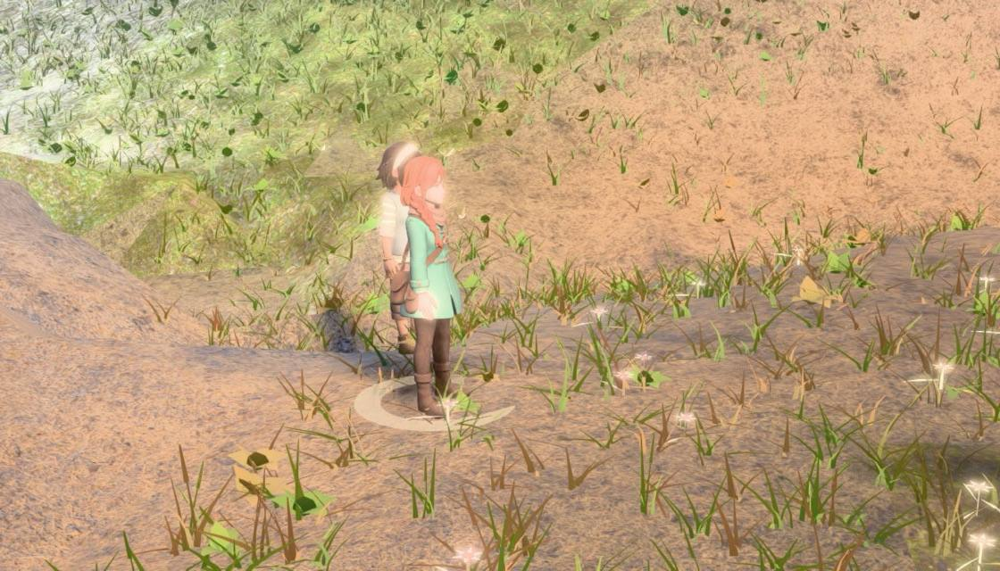
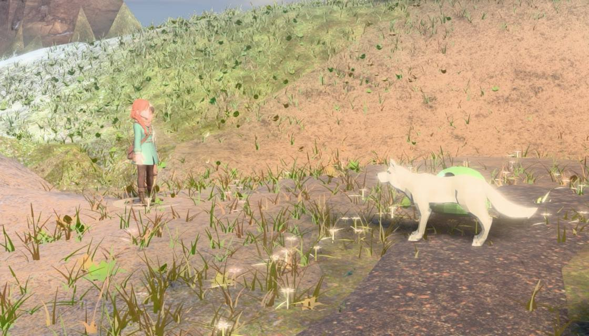
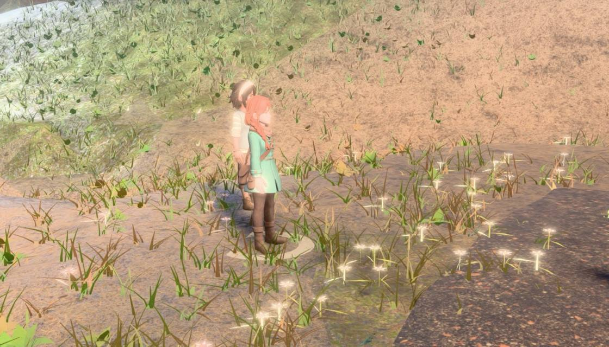
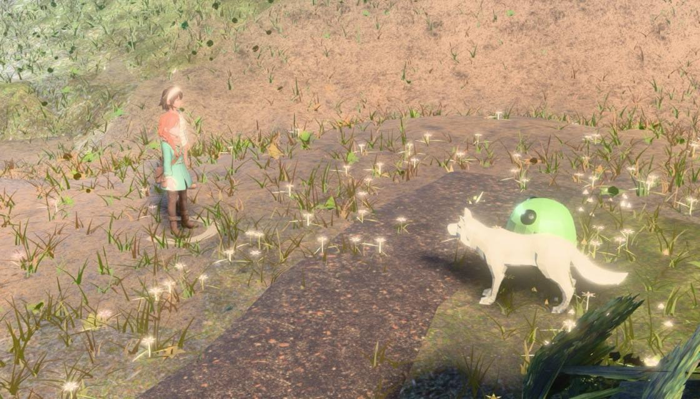
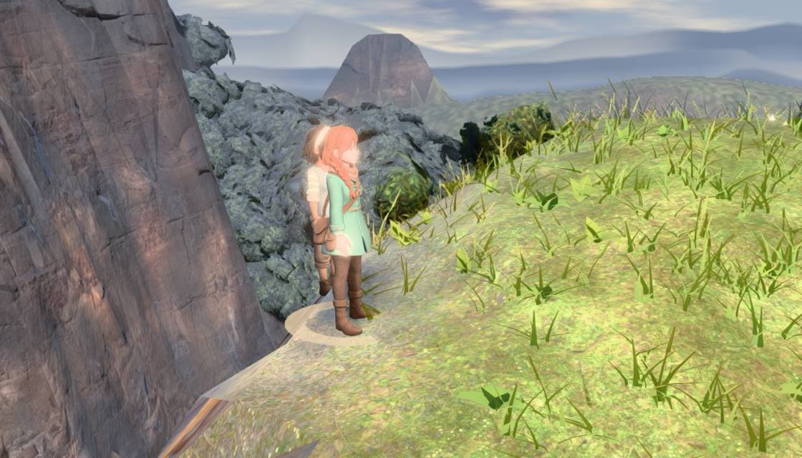
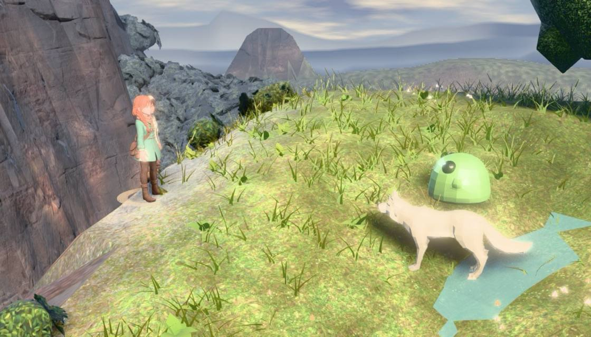
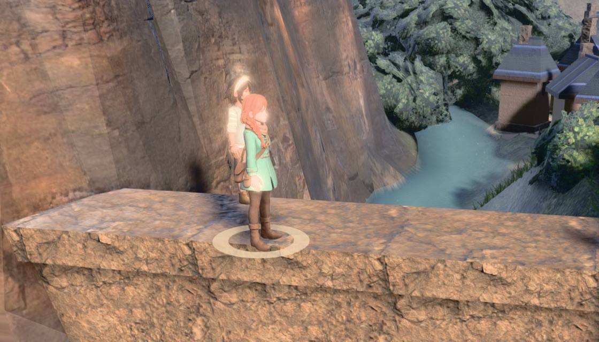
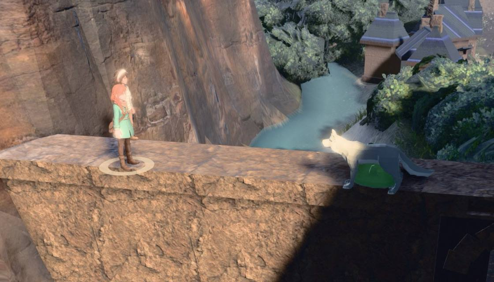

A real battle at four census sites, one per encounter zone. Nothing drives the camera:
the shot that is up is the shot the shipped code put there, and the command menu is detected off
battle_turnbased's own .ebb-cmds.idle class. Foes in frame is each foe's world
Box3 projected through the live camera and intersected with the canvas — in frame, not visible.
Zero-foe dwell is the fraction of sampled command-step frames containing no living foe at all.
before: 2026-08-09 04:29 · r185 · dwell 3000 ms
after: 2026-08-09 04:33 · r185 · dwell 3000 ms

| shot | decide | fov | 27.0 |
|---|---|---|---|
| foes in frame | 0.30 / 2 | zero-foe dwell | 83% |
| 180° | ok | cam dist | 7.91 m |

| shot | decide | fov | 27.0 |
|---|---|---|---|
| foes in frame | 2.00 / 2 | zero-foe dwell | 0% |
| 180° | ok | cam dist | 10.76 m |

| shot | decide | fov | 27.0 |
|---|---|---|---|
| foes in frame | 0.27 / 2 | zero-foe dwell | 87% |
| 180° | ok | cam dist | 7.96 m |

| shot | decide | fov | 27.0 |
|---|---|---|---|
| foes in frame | 2.00 / 2 | zero-foe dwell | 0% |
| 180° | ok | cam dist | 10.99 m |

| shot | decide | fov | 27.0 |
|---|---|---|---|
| foes in frame | 0.27 / 2 | zero-foe dwell | 87% |
| 180° | ok | cam dist | 7.91 m |

| shot | decide | fov | 27.0 |
|---|---|---|---|
| foes in frame | 2.00 / 2 | zero-foe dwell | 0% |
| 180° | ok | cam dist | 10.89 m |

| shot | decide | fov | 27.0 |
|---|---|---|---|
| foes in frame | 0.30 / 2 | zero-foe dwell | 83% |
| 180° | ok | cam dist | 7.91 m |

| shot | decide | fov | 27.0 |
|---|---|---|---|
| foes in frame | 2.00 / 2 | zero-foe dwell | 0% |
| 180° | ok | cam dist | 11.41 m |
A decide re-solve happens DURING the turn (setActor, setTarget), never at
staging — solveArena, the 69.7 ms the placement lane priced, is not on this path.
Both arms alternate inside ONE live battle off the live shot row's own keep field, so a
thermal drift lands on both.
| site | keep off p50 | p90 | max | keep on p50 | p90 | max | refusals |
|---|---|---|---|---|---|---|---|
| s041 meadow | 0.1 | 0.2 | 0.3 | 0.4 | 0.5 | 0.9 | 0 |
| s005 forest | 0.1 | 0.2 | 0.3 | 0.4 | 0.5 | 0.7 | 0 |
| s033 crag | 0.1 | 0.2 | 0.2 | 0.4 | 0.5 | 0.9 | 0 |
| s030 water | 0.1 | 0.2 | 0.2 | 0.4 | 0.4 | 0.9 | 0 |
| staging solve p50 / max | trigger → first frame p50 / max | |
|---|---|---|
| before | 51 / 51 ms | 497.9 / 499.2 ms |
| after | 47 / 50 ms | 493.6 / 496.8 ms |
Eight further census sites, all four zones, most of them sorted BAD by the placement
lane. One build: --keep=0 restores the pre-fix decide row at run time.
| site | zone | keep off — foes in frame | zero-foe dwell | keep on — foes in frame | zero-foe dwell | 180° | refusals |
|---|---|---|---|---|---|---|---|
| s000 | water | 0 / 2 | 100% | 2 / 2 | 0% | ok | 0 |
| s008 | crag | 0 / 2 | 100% | 2 / 2 | 0% | ok | 0 |
| s007 | meadow | 0 / 2 | 100% | 2 / 2 | 0% | ok | 0 |
| s023 | forest | 0 / 2 | 100% | 2 / 2 | 0% | ok | 0 |
| s012 | forest | 0 / 2 | 100% | 2 / 2 | 0% | ok | 0 |
| s026 | meadow | 0 / 2 | 100% | 2 / 2 | 0% | ok | 0 |
| s039 | meadow | 0 / 2 | 100% | 2 / 2 | 0% | ok | 0 |
| s051 | meadow | 0 / 2 | 100% | 2 / 2 | 0% | ok | 0 |
A round contains ONE command step per living party member — the scheduler collects every decision before anything resolves — and each one is unbounded, because it ends when the player presses a key. The only fixed part of a round is its resolution: median 7.83 s from the last commit to the next round's first menu, measured over the same four sites, unchanged by this change. So at two seats and a brisk one second a seat, a quarter of the round was the zero-foe frame; at a deliberating five seconds a seat it was over half of it. The steady-state figure does not depend on that guess: past the 620 ms move it was 100% zero-foe at 4/4 sites, and it is now 0%.
Instrument: tools/battle_decide.mjs
(--mode=measure|cost|board).
Data: decide-before.json, decide-after.json, cost.json.